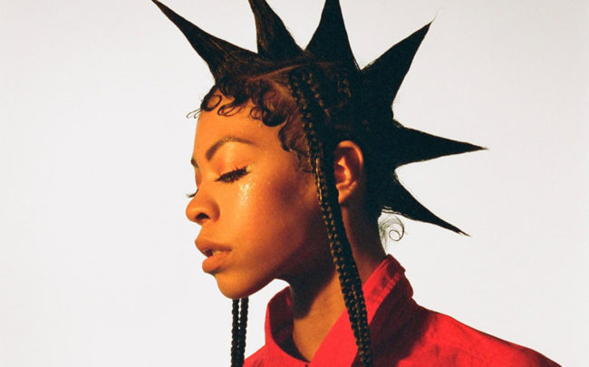
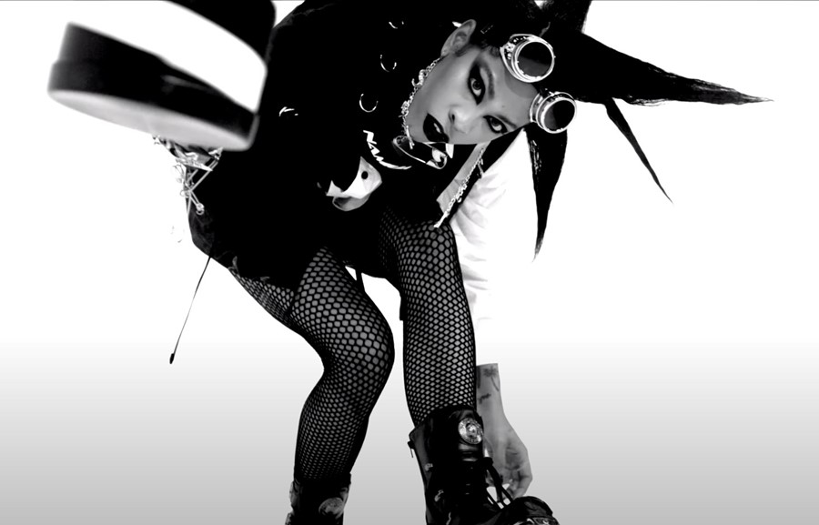
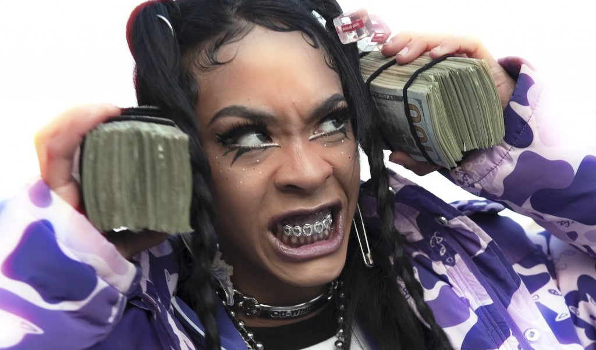

We all know the world isn’t all sunshine and rainbows: it’s OK to get a little nasty sometimes. And Rico Nasty is the Maryland native dominating the macho rap world, all while injecting a bit of punk realness along her way to stardom. With hustle, braggadocio and immense talent, women are now running rap with a sense of community spirit; Cardi B, Megan Thee Stallion, Rico and more are sticking together and trailblazing with wildly original artistry.
And, in the middle of a pandemic, Rico – real name Maria Kelly – serves up looks. Today, over Zoom, she’s sporting a short, luridly green wig, looking like a pixie in a Fenty hoodie. She’s giddy because she’s just dropped the ear-shattering single ‘iPhone’ and freshly announced her first-ever make-up collaboration with the brand Il Makiage. It’s been more productive than your average bread-baking lockdown, that’s for sure, and she’s also trying out new hobbies – such as painting, cooking and scouring the internet for apple jelly – because, she says, such restlessness is “the thing about being a Taurus that sucks”.
The rapper has fled Largo, her quarantined hometown, to be in Los Angeles with her boyfriend, two besties and her son Cameron, whom her fans can’t get enough of every time she posts him on her Instagram. Although she’s found self-isolation tough, she sees a silver lining in the fact that it enabled her to spend more time with Cameron.
Although she seems relatable and low-key via video call, Rico has spent the past six years rising from local star to a global modern rap icon. In doing so, she’s proven that she’s more versatile than your bog-standard rapper. She can sing, as she proved with 2017’s otherworldly and synth-heavy ‘Tales Of Tacobella’; one track, the heartfelt ‘Brandon’, was dedicated to her child’s late father, who died of an asthma attack in Rico’s senior high school year. And she can deliver different genres too: tracks such as ‘Sandy’ and ‘Cold’, created with infamous super-producer Kenny Beats last year, saw her unleash her hellish screamo voice over crackling guitar.
Nasty’s known for coining the term “sugar trap”, blending hardcore, gruff vocals and grungy hooks with softer, computerised beats.
Channelling nostalgic noughties culture and sound while exuding turbulent modern production, Rico’s studio debut solidifies her status as a singular talent

With her rocker flare, brash attitude and explosive music, Rico moves to her own beat. On this early November evening in New York City, the Largo, Md. native has just wrapped a day of promo for her debut album, Nightmare Vacation, and now unwinds on a luxurious bed in her 6 Columbus Central Park hotel room. Her look is subtle: two pigtails, minimal makeup and a gray, lacey outfit, but Rico always exudes a rock star. That’s her aesthetic and she carries it to her core. It’s what makes the rhyme-slinger look and feel original and authentic and has helped her recently snag collabo deals with makeup brands Il Makiage and Rihanna’s Fenty.
Since she first appeared on the scene as a high school junior with the 2014 mixtape Summer’s Eve, Rico has amassed a strong reputation as a rage rapper, punk-plastic fashion icon, and chief leader of the motivational power of simply smacking a bitch.
With the drop of her mixtape Anger Management in 2019, the world was introduced to a rap sound that infused punk, grime, and, as Rico calls it, “primal screaming therapy.”
With her androgynous nature and outlandish style, Rico has been an icon for outcasts for years. This, she says, is because she was once an outcast like her fans. The mosh pit became her outlet, and she was able to find herself as she flailed around with fellow super turned-up teens at her first Rolling Loud Festival, one of the biggest rap events in the world, held all over America. “When someone’s an outcast looking for a safe space,” she says, “they walk around like, ‘Where the weirdos go!’ And it’s like, ‘Hey! Go to a Rico Nasty show’.
“Let these guys know that they can’t tell you what to do. I’mma shake this ass, and you’re going to watch it and you’re going to pay my bills. I love it because it’s time women stop worrying about what men think about them. We might not say we are, but [women can be] really mean and like ‘That’s that hoe shit!’ and it’s really not. It’s really just having fun and enjoying your life.”
“I don’t want people to think that they’re not good enough and look at me and get hope because everybody can do something very awesome. They just haven’t tapped into that part of their confidence yet.”
"THERE’S NOTHING THAT SHOULD MAKE ME FEEL LIKE I'M BETTER THAN NOBODY ON GOD’S GREEN EARTH, BABY. BECAUSE IF I HAVEN'T FOUND A CURE TO COVID, THEN I'M JUST LIKE THESE OTHER BITCHES. ARTISTS SHOULDN'T BE THAT SEPARATED FROM THEIR REAL SELVES AND WHATEVER PERSONA THEY FEEL.”
Hoping to maintain her boundless artistry to inspire the next generation of girls who want to be pop-punk princesses, Rico longs for this album to remind women that “you are fire once you tap into that level of confidence. And when you do, nobody can tell you shit”. Combining the badassery she learned from Joan Jett and mixing it with her sensitive mission to keep hope alive, she wants to teach the next generation that “you can walk down the street like you want to – we’re talking about strutting, feeling yourself.”
This sentiment leads to a brilliant Nasty closing riff. “All the best shit happens when you’re scared,” she says. “It’s probably a sign because you only get butterflies because of fear, but you gotta get that bitch away and do it. Don’t do something that someone else might like – do something that you know you’ll like. You gotta be happy with all the decisions you make and make them right. If you do that, you can’t fuck up.”

Who is Rico Nasty right now? There’s no more personas. There’s no more alter egos. I just am who I am. There is no hard Rico. There is no soft Rico. I feel like [I] just kind of broke those barriers. I’ve finally found my niche tone. I guess, from a melodic sense that I really, really like and it blends well with other artists. I don’t know, I feel like I’ve given my fans too many groups. This is this Rico and that Rico and everything is just, at the end of the day, it’s just me. There is no other personality and all this shit that I would have tried to hide behind a couple years ago.
Yeah, that was a really weird time in my life. Especially like, just the whole XXL scene, the hard hip-hop people, like, this bitch is not real hip-hop. She’s trying to be White. She’s trying to be a rock star. And I’m like, if I’m not hip-hop, what the fuck is hip-hop?
You can see yourself as a trailblazer and they never have it easy. They’re always scrutinized.It’s very lonely because they’re intimidated. Trailblazers, they are weird. I can’t name a trailblazer that’s not a little bit weird. Just because we make great music doesn’t make us great human beings or completely geniuses at social skills. When I make my music, nine times out of 10, I make my music, I’m in the studio for 72 hours. Any person that stays in a room and doesn’t wash their ass or brush their teeth for 72 hours to make a song is not right in the head. Like, we’re not all the way there, bro. We’re just here for the music.
“I don’t know where I fit,” Rico says of her place in the music world. She welcomes in misfits from all walks of life; her audience is just as eclectic as her sound and image, as she switches between the oversized tracksuits and stacked chains of hip-hop and the spiked chokers and fishnets beloved of old-school punk. “I don’t really resonate with punk stars because I’m not that hardcore. I like bubbles and stuff; I’m not harsh and crazy. And with this new album, I definitely resonate with being a pop-punk princess.